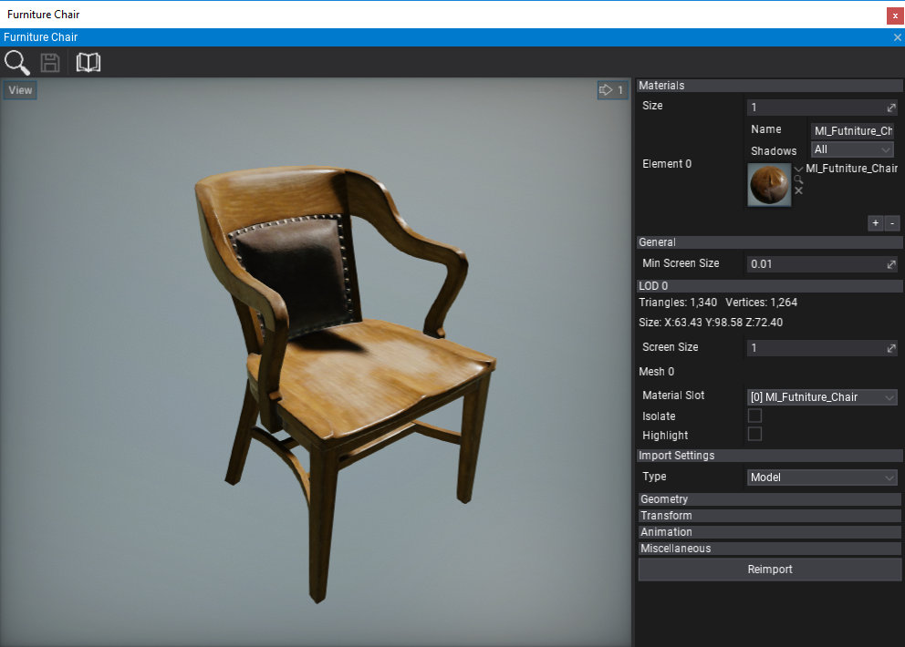
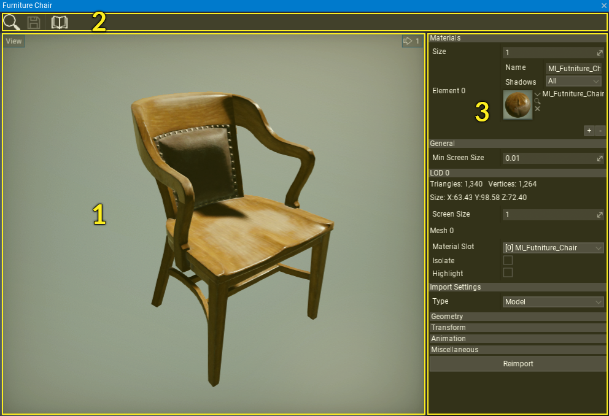
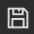
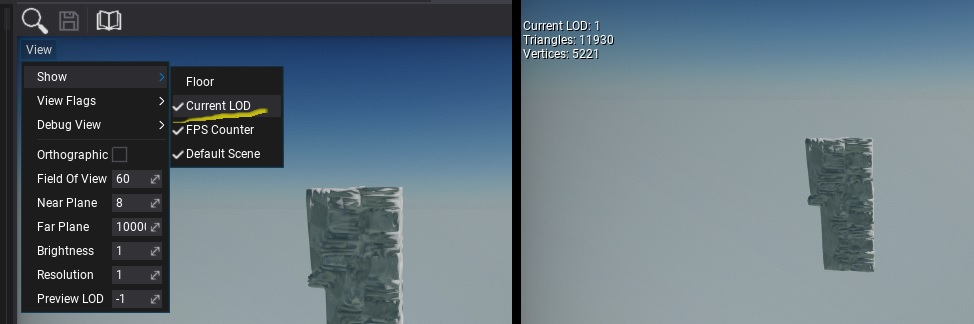
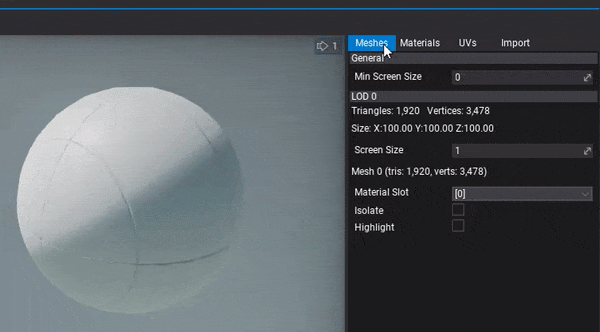

Model Window

Model Window is the main tool to preview and reimport model assets. To show it simply double-click on a model in a Content window.
Interface
The model window UI consists of a toolstrip, viewport and properties panel.

- Viewport
- Toolstrip
- Properties Panel
Toolstrip
The following table lists the options in the toolstrip and what they do.
| Icon | Description |
|---|---|
 |
Shows and selects the asset in the Content window |
|  | Saves edited model asset |
| Opens documentation |
Viewport
The viewport panel shows the preview of the model. You can navigate in the viewport by using the mouse buttons and WSAD keys using the first-person view camera.
In the upper left corner, the viewport contains a widget **View ** button with many options for the viewport customization and model debugging (LOD preview, camera settings and more).
Level Of Detail
When working with static models level of details you can preview a custom LOD by setting View -> PReview LOD (value -1 uses default LOD). To preview current LOD stats in the viewport use View -> Show -> Current LOD.


Properties panel

This panel shows model asset properties organized into separate tabs.
- Meshes - properties of every model Level Of Detail (LOD). This includes LOD triangles/vertices stats, bounds, material slot binding for meshes and option to isolate or highlight mesh.
- Materials - list of material slots used by this model.
- UVs - model texture coordinate channels debug visualizer including lightmap UVs.
- Import - model import options (restored from last import). You can modify them and press Reimport button to update the asset from the source image file
To learn more about model import options see dedicated Model Import Settings page.